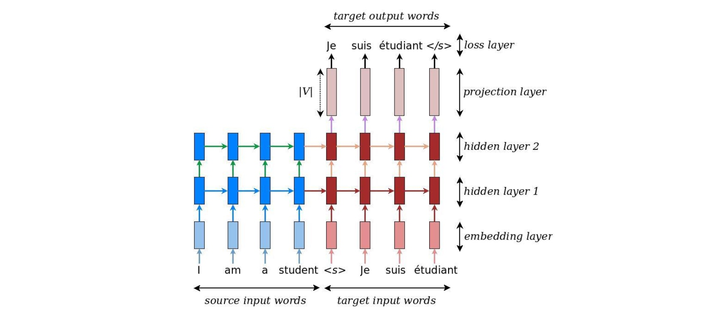
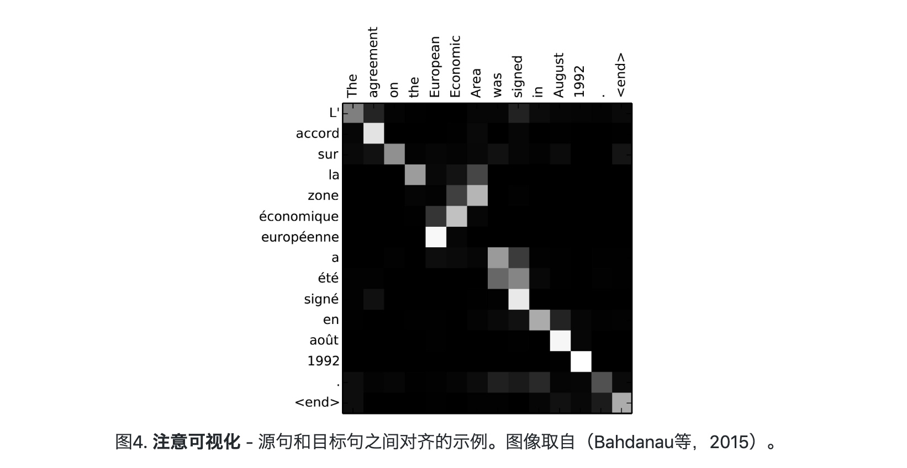
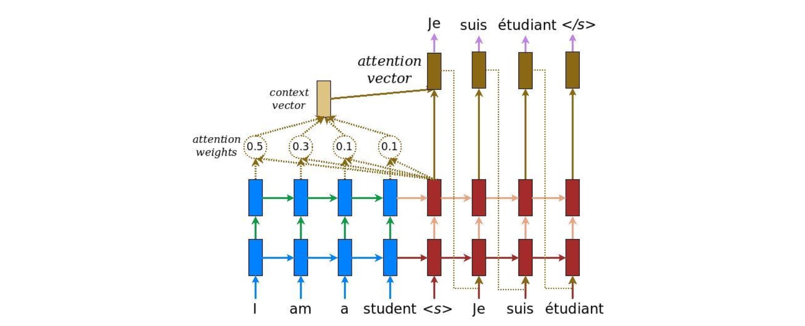
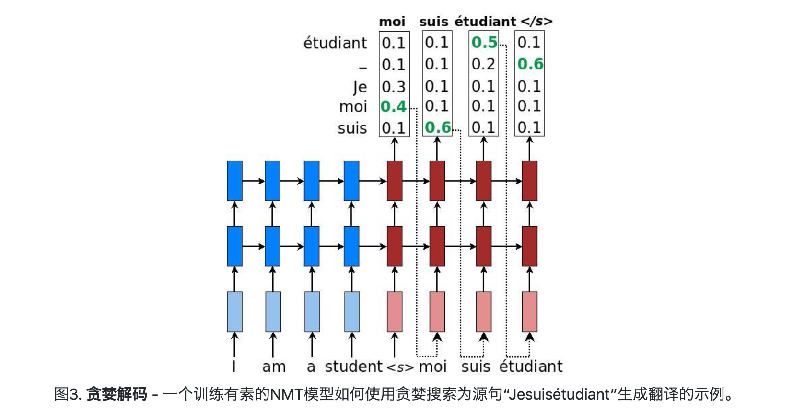
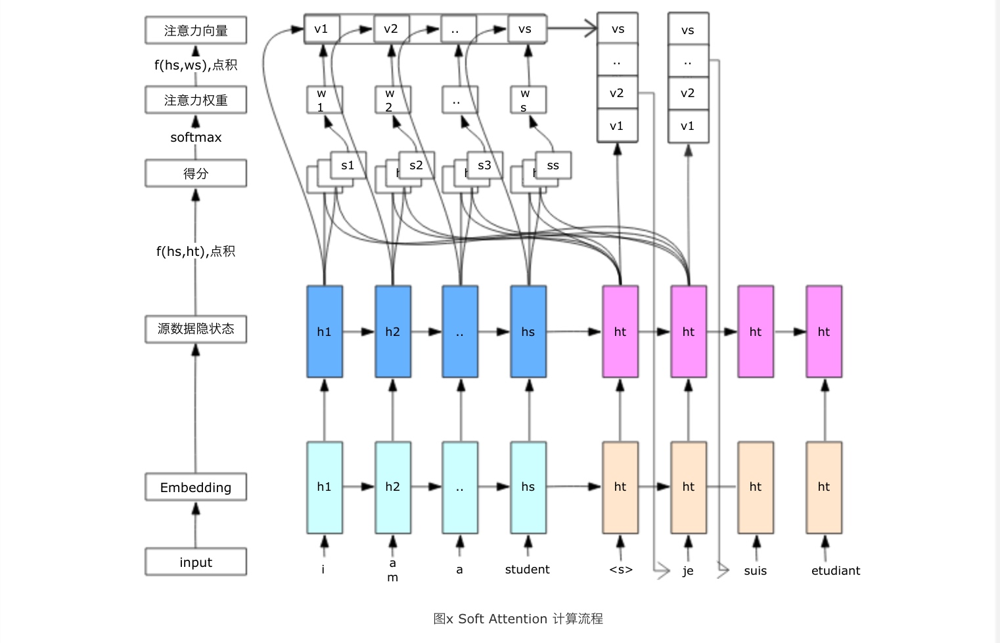
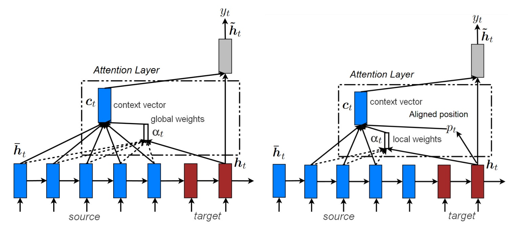

深度学习中的注意力机制(Attention Mechanism)
Attention Mechanism:人类在观察事物，思考事情的时候往往会将注意力聚焦到某个位置或者某个点上，而忽略其他不相关的、相关性弱的事物上，这就是人类注意力机制，那么对于机器来说同样可以在各种任务中加入这种机制来提升解决问题的能力，这就是机器的注意力机制，那么这种机制如何实现的呢，又是如何发展的呢？
注意力机制的发展史
注意力机制最早被使用于图像领域，好像很多东西都是从图像领域开始被使用进而发展到各个领域中，包括深度学习的盛行也是。Attention最早在图像领域被踢出来的时候同样是沉默了很久，没有被开发出什么威力，就像当年的神经网络一样，直到google mind团队的这篇论文《Recurrent Models of Visual Attention》，使用RNN+Attention进行图像分类，是的Attention被众人所熟知。之后Bahdanau等人在论文《Neural Machine Translation by Jointly Learning to Align and Translate》将Attention应用于NLP领域的机器翻译。到了2016年左右基于CNN的Attention机制也被用于NLP领域，再到2017年的基于自注意力机制的特征抽取器Transformer,2018年的BERT刷新NLP的各项任务记录，Attention的江湖地位也越来越高。
Ecoder-Decoder架构
Ecoder-Decoder是一种模型架构，这种结构可以用来解决多种seq-seq问题，如：机器翻译,摘要生成，自动对话，图像标题生成，语音识别。。。这种结构可以采用多种多样的实现，只要改变Ecoder或者Decoder中的网络层结构，就可以得到一种新的Model.
机器翻译
早期的机器翻译采用RNN作为编码-解码的网络结构，RNN可以解决单词之间的依赖问题，使翻译更流畅编码器。将输入语句编码成一个中间语义向量C,解码器通过对这个中间语义和生成的单词进行下一个单词的解码，一步步得到后续的翻译结果，如下图：

这种结构存在一个问题就是无论我们翻译出哪一个词所使用的中间语义C都是同一个，而且这个固定大小的中间语义向量无论句子的长度大小，向量C都不会改变。这就导致句子越长的时候这个中间向量的抽象程度越高，所包含的单独每个向量的信息就越少。解决这个问题的关键就是注意力机制，加入注意力机制对于每个要解码的单词给与不同的中间语义C,不仅仅是不同，他同时对于要解码的目标单词去关注输入源数据中的相关的单词，找到二者存在的某种神秘联系。_注意力机制的一个很好的副产品是源语句和目标语句之间易于可视化的对齐矩阵_（如图4所示）。

它展示英语-翻译成-法语是解码器的注意力权重，即每解码一个单词对原语句中每个单词的关注程度。每一行代表的都是一个要翻译词的注意力权重。
基于rnn+attention的神经网络机器翻译结构如下：

如上图所示，注意力计算在每个解码器时间步骤发生。它包括以下几个阶段：---
- 1.将当前目标隐藏状态\( h_t \)与所有源状态\( \overline {h} _s \)进行比较以得出注意力权重\(\alpha_{t s}\)（可以如图4中那样可视化）。
- 2.基于注意力权重\(\alpha_{t s}\)，我们计算上下文向量作为源状态\( \overline {h} _s \)的加权平均值。
- 3.将上下文向量\({c}_t\)与当前目标隐藏状态\({h}_t\)组合以产生最终之注意力向量
- 4.注意向量作为输入馈送到下一个时间步（输入馈送）。
前三个步骤可以通过以下等式汇总：
\[
\begin{aligned} \alpha_{t s} &=\frac{\exp \left(\operatorname{score}\left(\boldsymbol{h}_{t}, \overline{\boldsymbol{h}}_{s}\right)\right)}{\sum_{s^{\prime}=1}^{S} \exp \left(\operatorname{score}\left(\boldsymbol{h}_{t}, \overline{\boldsymbol{h}}_{s^{\prime}}\right)\right)} &[\text { Attention weights }](1)\\ \boldsymbol{c}_{t} &=\sum_{s} \alpha_{t s} \overline{\boldsymbol{h}}_{s} &[\text { Context vector }](2)\\ \boldsymbol{a}_{t} &=f\left(\boldsymbol{c}_{t}, \boldsymbol{h}_{t}\right)=\tanh \left(\boldsymbol{W}_{c}\left[\boldsymbol{c}_{t} ; \boldsymbol{h}_{t}\right]\right) &[\text { Attention vector }](3) \end{aligned}
\]
这里，该函数score用于将目标隐藏状态\( h_t \)与每个源隐藏状态\( \overline {h} _s \)进行比较，并将结果归一化(softmax)为产生的注意力权重（源位置的分布） ）。
评分功能有多种选择; 流行的评分函数包括公式中给出的乘法和加法形式。该功能函数f也可以采取其他形式。
\[
\operatorname{score}\left(\boldsymbol{h}_{t}, \overline{\boldsymbol{h}}_{s}\right)=\left\{\begin{array}{ll}{\boldsymbol{h}_{t}^{\top} \boldsymbol{W} \overline{\boldsymbol{h}}_{s}} & {[\text { Luong's multiplicative style] }} \\ {\boldsymbol{v}_{a}^{\top} \tanh \left(\boldsymbol{W}_{1} \boldsymbol{h}_{t}+\boldsymbol{W}_{2} \overline{\boldsymbol{h}}_{s}\right)} & {[\text { Bahdanau's additive style] }}\end{array}\right.
\]
第四步骤的细节
注意力向量作为下一个时间步\({h}_{t+1}\)的输入，但是我们不能直接使用一个关于所有原词的注意力权重作为一个输入，我们必须选择一个单词来作为下一个时间步的输入，如何选择呢？_最简单的就是选择注意力权重中权重最大的位置对应的单词作为下一个是时间步的输入_，如下图：

这就是贪婪搜索，每一步都选择最好的，得到的结果至少是个差不多的结果，能得到一个局部最优结果。但是并不一定能得到最优的解码结果。它的优点是速度快。为了得到更好的结果我们可以选择beam_search集束搜索这种搜索策略，它可以得到多的搜索空间，以提高搜索的准确性。
注意力机制
Attention的定义：
1、给定一组向量集合values，以及一个向量query，attention机制是一种根据该query计算values的加权求和的机制。
2、attention的重点就是这个集合values中的每个value的“权值”的计算方法。
3、有时候也把这种attention的机制叫做query的输出关注。(Query attends to the values）
在机器翻译中，Query=上一个翻译的词，key=value=源数据中的单词。目标就是得到一个关于源数据中每个单词的注意力向量。
Soft Attention

在这里有两个计算函数\(f(hs,ht)\)和\(f（hs,ws）\),前一个函数是得分计算函数：可以是点积，cos相似度等，计算这个得分之后需要计算权重，原始使用的是softamx函数，得到的是关于所有源数据的注意力权重，然后再计算注意力权重和源数据的点积，这就是gloal attention,它存在一个很大的缺点就是关注的数据太多，计算复杂。因此提出了一种只关注部分数据的local attention,它所产生的注意力向量部分有值，其他部分为0。

当注意力向量是一个one-hot向量时，他所关注的仅仅是只有一个源数据单词，这就是Hard attention。
self Attention
自注意力是一种非常特殊的注意力机制，soft attention中query和key,value两组不同的数据，它是一种生成target需要关注source的关系，而自注意力是在source或target中去寻找单词之间的关系，他可以找到某句话每个单词跟其他单词的关注关系或者是依赖关系，可以更容易捕获同一个句子中单词之间的一些句法特征或者语义特征，这就十分像rnn，但是rnn只能顺序捕捉依赖关系，并不能直接关注到目标单词，相隔越远，有效捕捉到关系的可能性就越小。而self attention直接将两个单词联系起来。
可以发现self attention更能发掘数据本身存在的特点，让数据本身变得菱角分明，相比rnn更适合作为数据的特征抽取，在A structured Self-Attentive Sentence Embedding中介绍了self attention的定义和计算方法，以及基于这种自注意力机制的句子嵌入提取及其在3个NLP任务中的表现远超隐层数据的maxpool和avg作为句子嵌入。
self attention忽略了语序可以直接关注不同时间步间的单词，提高了长距离依赖的有效性，这是一个很大的优点，同时也带了一个缺点就是它无法编码单词之间的顺序信息，然而在NLP中的数据都是时序数据，位置信息十分重要，因此提出了一种位置编码向量作为辅助输入解决这个问题。